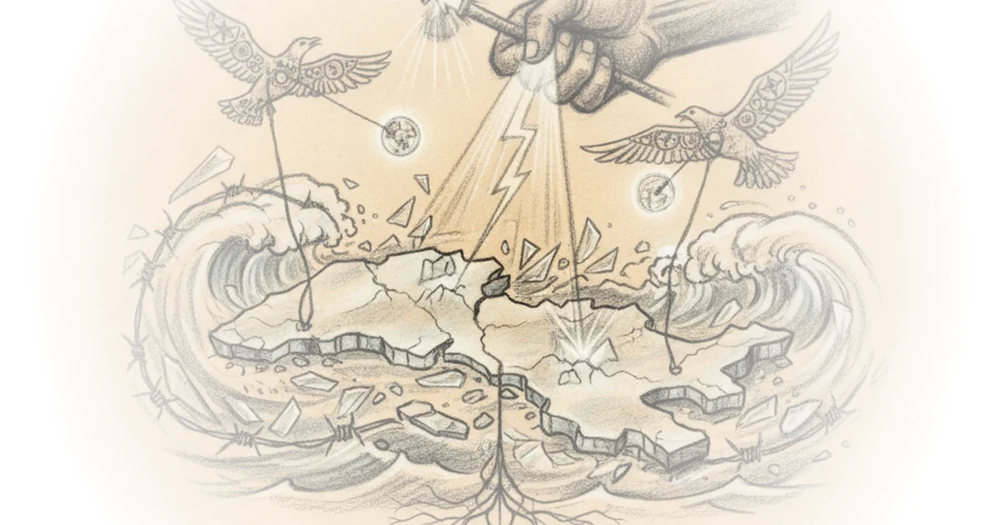
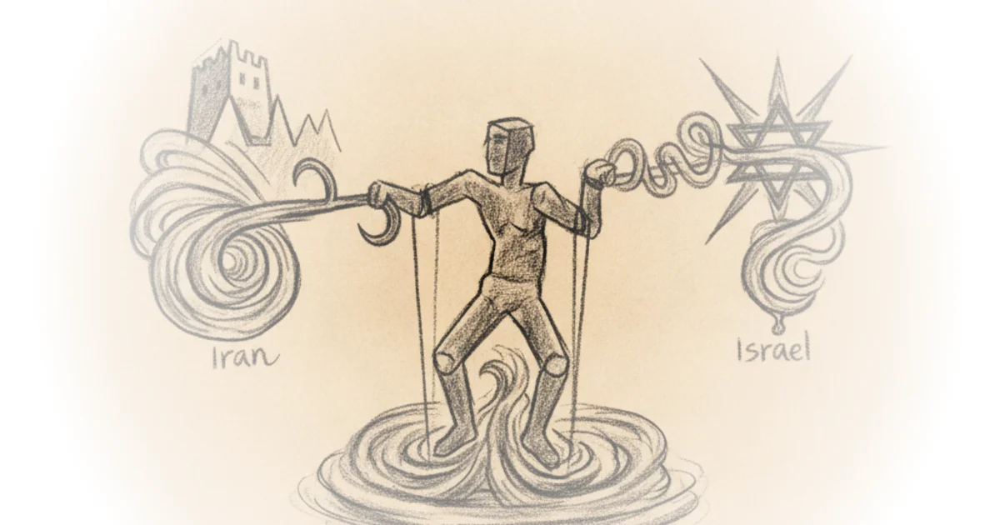

The courts should rein in the administration's proposed section 301 tariffs as well Various · Reason ·Jun 14, 2026 · 14 min read · Foreign Policy
How world sports bent to Moscow's will Tim Mak · The Counteroffensive ·Jun 14, 2026 · 12 min read · Foreign Policy
Weekend update #189: Can Ukraine isolate Crimea? Phillips P. O'Brien · Phillips P. O'Brien ·Jun 14, 2026 · 13 min read · Foreign Policy 
Bridges, blockades and military personnel reform. The big five, 14 June edition Mick Ryan · Mick Ryan ·Jun 13, 2026 · 23 min read · Foreign Policy
Two potential upcoming Canadian secession referenda and the broader issues they raise Various · Reason ·Jun 13, 2026 · 10 min read · Foreign Policy
Sen. Slotkin: Ndaa, AI guardrails, and banning China's cars Jordan Schneider · ChinaTalk ·Jun 12, 2026 · 20 min read · Foreign Policy
War threatens Ukraine’s checkers champions Tim Mak · The Counteroffensive ·Jun 10, 2026 · 10 min read · Foreign Policy
Paul Kennedy on great powers, past and present Jordan Schneider · ChinaTalk ·Jun 10, 2026 · 43 min read · Foreign Policy
Midweek update #14: How low can the US go? Phillips P. O'Brien · Phillips P. O'Brien ·Jun 10, 2026 · 10 min read · Foreign Policy
The forever war on Israel’s Northern border Dan Perry · Dan Perry ·Jun 9, 2026 · 14 min read · Foreign Policy
The monstrance, the Congress, and el zorro: Highlights of leo in Spain Various · The Pillar ·Jun 8, 2026 · 17 min read · Foreign Policy
Weekend update #188: Ukraine reaches out and touches Putin--Twice Phillips P. O'Brien · Phillips P. O'Brien ·Jun 7, 2026 · 12 min read · Foreign Policy
The writing is on the (kremlin) wall for Putin and choking the Crimea land bridge. The big five, 7… Mick Ryan · Mick Ryan ·Jun 6, 2026 · 20 min read · Foreign Policy
How local China built the EV boom Zichen Wang · Pekingnology ·Jun 6, 2026 · 23 min read · Foreign Policy
Uninvited drones ruined Putin’s big economic party Tim Mak · The Counteroffensive ·Jun 6, 2026 · 12 min read · Foreign Policy
Why Europe should put up trade barriers against Chinese goods Noah Smith · Noahpinion ·Jun 6, 2026 · 12 min read · Foreign Policy
WarTalk: The view from africom Jordan Schneider · ChinaTalk ·Jun 5, 2026 · 36 min read · Foreign Policy
Jia min: Beijing’s new language for managing competition with the U.S Zichen Wang · Pekingnology ·Jun 4, 2026 · 33 min read · Foreign Policy
Midweek update #13: How weak is the USA? Phillips P. O'Brien · Phillips P. O'Brien ·Jun 3, 2026 · 11 min read · Foreign Policy 
Where did the 40,000 Iran protests death toll number come from? Mehdi Hasan · Zeteo ·Jun 2, 2026 · 27 min read · Foreign Policy
Strategic stability, structural strain Various · Sinification ·Jun 2, 2026 · 31 min read · Foreign Policy
How Russia exploits Ukraine’s Greek community Tim Mak · The Counteroffensive ·May 31, 2026 · 13 min read · Foreign Policy
Weekend update #187: Trying to collapse the Russian army from Behind--What to watch out for Phillips P. O'Brien · Phillips P. O'Brien ·May 31, 2026 · 10 min read · Foreign Policy
Highway to hell: Ukraine's logistics lockdown, Taiwan’s littoral command and China’s evolving… Mick Ryan · Mick Ryan ·May 30, 2026 · 18 min read · Foreign Policy
The current balance in this Pause—Not end, but pause, perhaps perpetual pause—in the war in the… Brad DeLong · DeLong's Grasping Reality ·May 30, 2026 · 11 min read · Foreign Policy
Russian drone strikes Romanian apartment building David Smith · Moldova Matters ·May 29, 2026 · 11 min read · Foreign Policy
How to make sure AI doesn't spy on US or kill innocent people Various · Reason ·May 26, 2026 · 22 min read · Foreign Policy